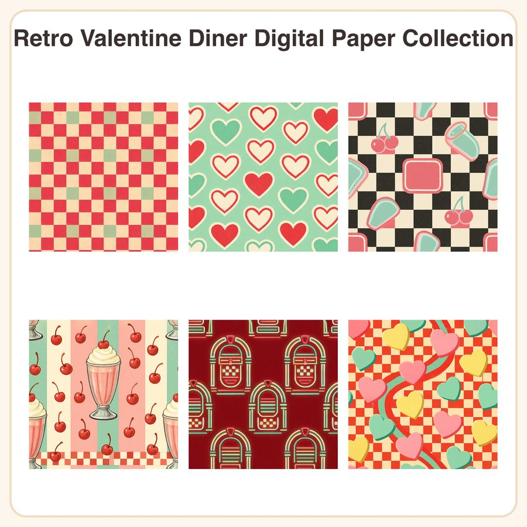

$4.99
View on EtsySock hops, milkshakes, and candy hearts! This set of 6 seamless retro diner patterns brings sweet 1950s Valentine nostalgia to your next paper craft or party project. 💌 What's included: • 6 seamless patterns, each as a 3072x3072px JPEG (12x12in @ 300dpi) • 6 matching repeatable PNG tiles for smaller custom scaling • Total of 12 files, instant digital download Patterns included: 1. Cherry red & cream gingham 2. Scattered retro heart outlines on mint 3. Black & white checkerboard diner floor with pink accents 4. Pastel milkshake stripes with cherry-on-top motif 5. Neon jukebox silhouettes on deep red 6. Candy heart scatter in pink, yellow & mint Style notes: Retro 1950s diner aesthetic in cherry red, cream, mint, and chrome-pink, with bold rounded shapes, checkerboard motifs, and a slightly grainy vintage texture overlay. How to use: Perfect for Valentine's cards, scrapbook backgrounds, digital planners, gift wrap, party invitations, printable decor, fabric/vinyl design, and more. Open JPEGs directly for full-page backgrounds, or use the PNG tiles to seamlessly repeat at any size in your design software. License: Free for personal use and small business commercial use (up to 500 sold items per design). Please do not resell, redistribute, or share the digital files themselves. Honest disclosure: These designs were created by our shop with the help of AI image tools, then refined and prepared into seamless, print-ready files. No physical item will be shipped — this is a digital download only.